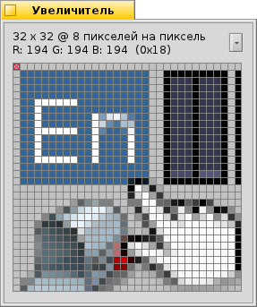

Русский
Русский Català
Català Deutsch
Deutsch English
English Español
Español Français
Français Italiano
Italiano Magyar
Magyar Polski
Polski Português
Português Português (Brazil)
Português (Brazil) Română
Română Slovenčina
Slovenčina Suomi
Suomi Svenska
Svenska 中文 ［中文］
中文 ［中文］ Українська
Українська 日本語
日本語 Увеличитель (Magnify)
Увеличитель (Magnify)
| Расположение в Deskbar: | ||
| Расположение в Tracker: | /boot/system/apps/Magnify | |
| Настройки хранятся по адресу: | ~/config/settings/Magnify_prefs |
Увеличитель показывает увеличенную версию зоны вокруг указателя мыши.
Вверху вы найдете размер и степень увеличения зоны. "32 x 32 @ 8 пикселей на пиксель" означает, что вы смотрите на область размером 32 x 32 пикселя вокруг указателя мыши и каждый пиксель увеличен в 8 раз.
Чуть ниже вы увидите цвет пикселя, обведенного красным цветом.
Вы можете двигать выделение с помощью следующих клавиш:
← / → / ↑ / ↓.
Для измерения дистанции и выравнивания объектов вы можете добавить до двух синих перекрестий, нажав ALT H. Их X/Y координаты, относительно левого верхнего угла, отображаются внизу.
Они так же могут быть перемещены при помощи следующих клавиш:← / → / ↑ / ↓. Активное перекрестие отмечается "x".
Кроме этого, вы можете перемещать курсор мыши попиксельно, нажимая следующие клавишы: OPT ← / → / ↑ / ↓.
Ниспадающее меню дает доступ к следующим опциям:
| ALT S | Сохраняет текущее изображение в виде рисунка PNG. | ||
| ALT C | Копирует текущее изображение в буфер обмена. | ||
| ALT T | Переключает отображение дополнительной информации. | ||
| ALT H | Добавляет перекрестие, которое вы можете двигать. | ||
| ALT SHIFT H | Убирает последнее добавленное перекрестие. | ||
| ALT G | Переключает отображение сетки. | ||
| ALT F | Останавливает/продолжает обновление увеличиваемой зоны. | ||
| ALT I | Перемещение мыши не влияет на увеличиваемую зону. | ||
| ALT / | Приводит увеличиваемую зону к квадратному виду до изменения размеров. | ||
| ALT - | Уменьшает размер увеличиваемой зоны вокруг указателя мыши. | ||
| ALT + | Увеличивает размер зоны вокруг указателя мыши. | ||
| ALT , | Понижает увеличение. | ||
| ALT . | Повышает увеличение. |